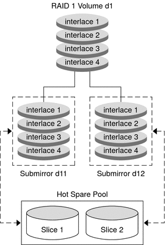

|
|||||||||||||
|
1. Getting Started With Solaris Volume Manager 2. Storage Management Concepts 3. Solaris Volume Manager Overview 4. Solaris Volume Manager for Sun Cluster (Overview) 5. Configuring and Using Solaris Volume Manager (Scenario) 8. RAID-0 (Stripe and Concatenation) Volumes (Overview) 9. RAID-0 (Stripe and Concatenation) Volumes (Tasks) 10. RAID-1 (Mirror) Volumes (Overview) 11. RAID-1 (Mirror) Volumes (Tasks) 12. Soft Partitions (Overview) 16. Hot Spare Pools (Overview) 20. Maintaining Solaris Volume Manager (Tasks) 21. Best Practices for Solaris Volume Manager 22. Top-Down Volume Creation (Overview) 23. Top-Down Volume Creation (Tasks) 24. Monitoring and Error Reporting (Tasks) 25. Troubleshooting Solaris Volume Manager (Tasks) A. Important Solaris Volume Manager Files B. Solaris Volume Manager Quick Reference |
Overview of Hot Spares and Hot Spare PoolsA hot spare pool is collection of slices (hot spares) that Solaris Volume Manager uses to provide increased data availability for RAID-1 (mirror) and RAID-5 volumes. In a slice failure occurs, in either a submirror or a RAID-5 volume, Solaris Volume Manager automatically substitutes the hot spare for the failed slice. Note - Hot spares do not apply to RAID-0 volumes or one-way mirrors. For automatic substitution to work, redundant data must be available. A hot spare cannot be used to hold data or state database replicas while it is idle. A hot spare must remain ready for immediate use a slice failure occurs in the volume with which it is associated. To use hot spares, you must invest in additional disks beyond those disks that the system actually requires to function. Solaris Volume Manager enables you to dynamically add, delete, replace, and enable hot spares within hot spare pools. You can use either the Solaris Management Console or the command-line utilities to administer hot spares and hot spare pools. See Chapter 17, Hot Spare Pools (Tasks) for details on these tasks. Hot SparesA hot spare is a slice (not a volume) that is functional and available, but not in use. A hot spare is reserved, meaning that it stands ready to substitute for a failed slice in a submirror or RAID-5 volume. Hot spares provide protection from hardware failure. Slices from RAID-1 and RAID-5 volumes are automatically replaced by hot spares when they fail. The hot spares are resynchronized available for use in the volume. The hot spare can be used temporarily until the failed submirror or RAID-5 volume slice can either be fixed or replaced. You create hot spares within hot spare pools. Individual hot spares can be included in one or more hot spare pools. For example, you might have two submirrors and two hot spares. The hot spares can be arranged as two hot spare pools, with each pool having the two hot spares in a different order of preference. This strategy enables you to specify which hot spare is used first. This strategy also improves availability by having more hot spares available. A submirror or RAID-5 volume can use only a hot spare whose size is equal to or greater than the size of the failed slice in the submirror or RAID-5 volume. If, for example, you have a submirror made of 1-Gbyte drives, a hot spare for the submirror must be 1 Gbyte or greater. Hot Spare PoolsA hot spare pool is an ordered list (collection) of hot spares. You can place hot spares into one or more hot spare pools to get the most flexibility and protection from the fewest slices. You could put a single slice designated for use as a hot spare into multiple hot spare pools, with each hot spare pool having different slices and characteristics. Then, you could assign a hot spare pool to any number of submirror volumes or RAID-5 volumes. Note - You can assign a single hot spare pool to multiple submirrors or RAID-5 volumes. However, a submirror or a RAID-5 volume can be associated with only one hot spare pool. How Hot Spares WorkWhen I/O errors occur, Solaris Volume Manager searches the hot spare pool for a hot spare based on the order in which hot spares were added to the hot spare pool. Solaris Volume Manager checks the hot spare pool for the first available hot spare whose size is equal to or greater than the size of the slice that is being replaced. The first hot spare found by Solaris Volume Manager that is large enough is used as a replacement. Solaris Volume Manager changes the hot spare's status to “In-Use” and automatically resynchronizes the data if necessary. The order of hot spares in the hot spare pool is not changed when a replacement occurs. In the case of a mirror, the hot spare is resynchronized with data from a functional submirror. In the case of a RAID-5 volume, the hot spare is resynchronized with the other slices in the volume. If a slice of adequate size is not found in the list of hot spares, the submirror or RAID-5 volume that failed goes into a failed state and the hot spares remain unused. In the case of the submirror, the submirror no longer replicates the data completely. In the case of the RAID-5 volume, data redundancy is no longer available. Tip - When you add hot spares to a hot spare pool, add them from smallest to largest in size. This strategy avoids potentially wasting “large” hot spares as replacements for small slices. When a slice experiences an I/O error, the failed slice is placed in the “Broken” state. To fix this condition, first repair or replace the failed slice. Then, bring the slice back to the “Available” state by using the Enhanced Storage tool within the Solaris Management Console. Or, use the metahs -e command. A submirror or RAID-5 volume is uses a hot spare in place of a failed slice until that failed slice is enabled or replaced. The hot spare is then marked “Available” in the hot spare pool. This hot spare is again ready for use. Hot Spare Pool StatesThe following table explains hot spare pool states and possible actions to take. Table 16-1 Hot Spare Pool States (Command Line)
Example—Hot Spare PoolFigure 16-1 illustrates a hot spare pool that is associated with submirrors d11 and d12 in mirror d1. If a slice in either submirror were to fail, a hot spare would automatically be substituted for the failed slice. The hot spare pool itself is associated with each submirror volume, not the mirror. The hot spare pool could also be associated with other submirrors or RAID-5 volumes, if desired. Figure 16-1 Hot Spare Pool Example |
||||||||||||
|